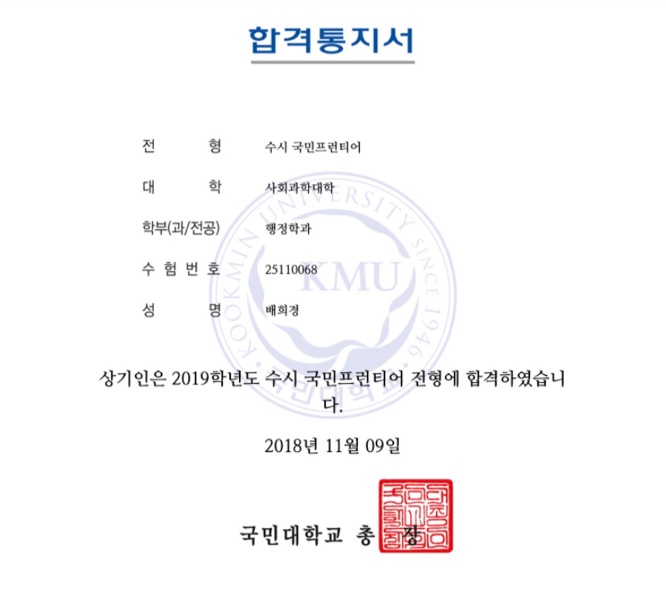
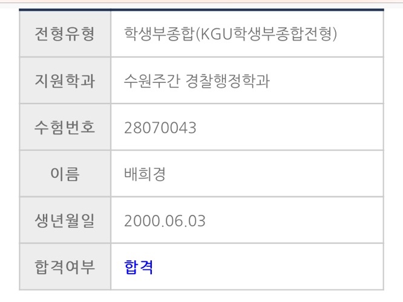
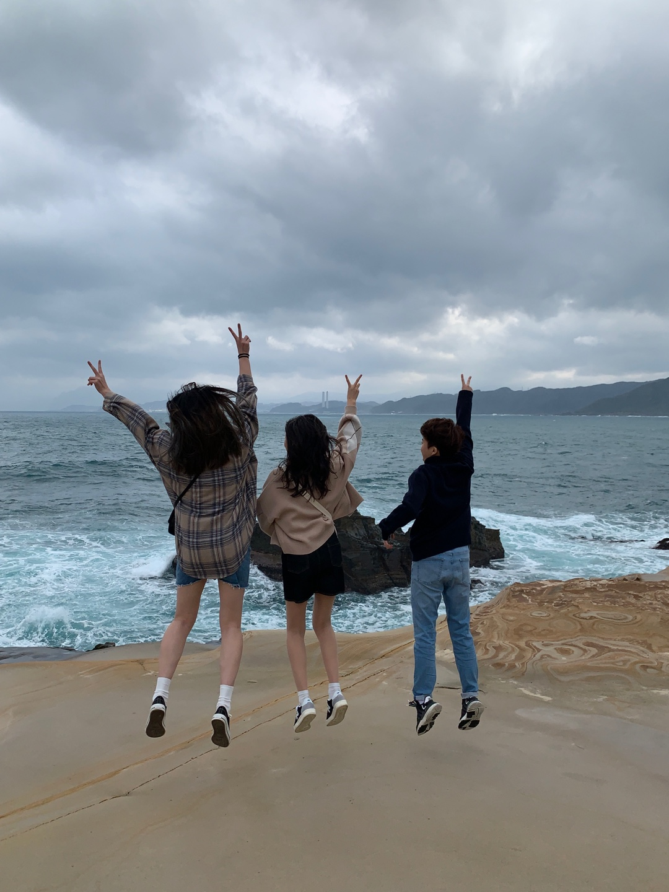
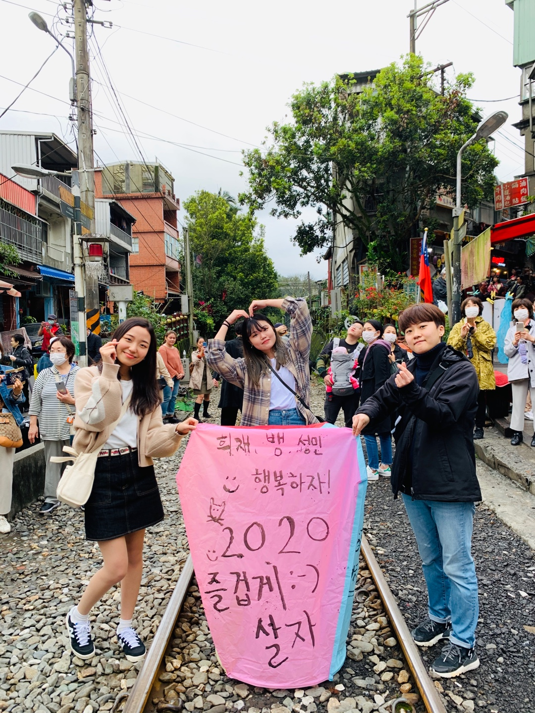
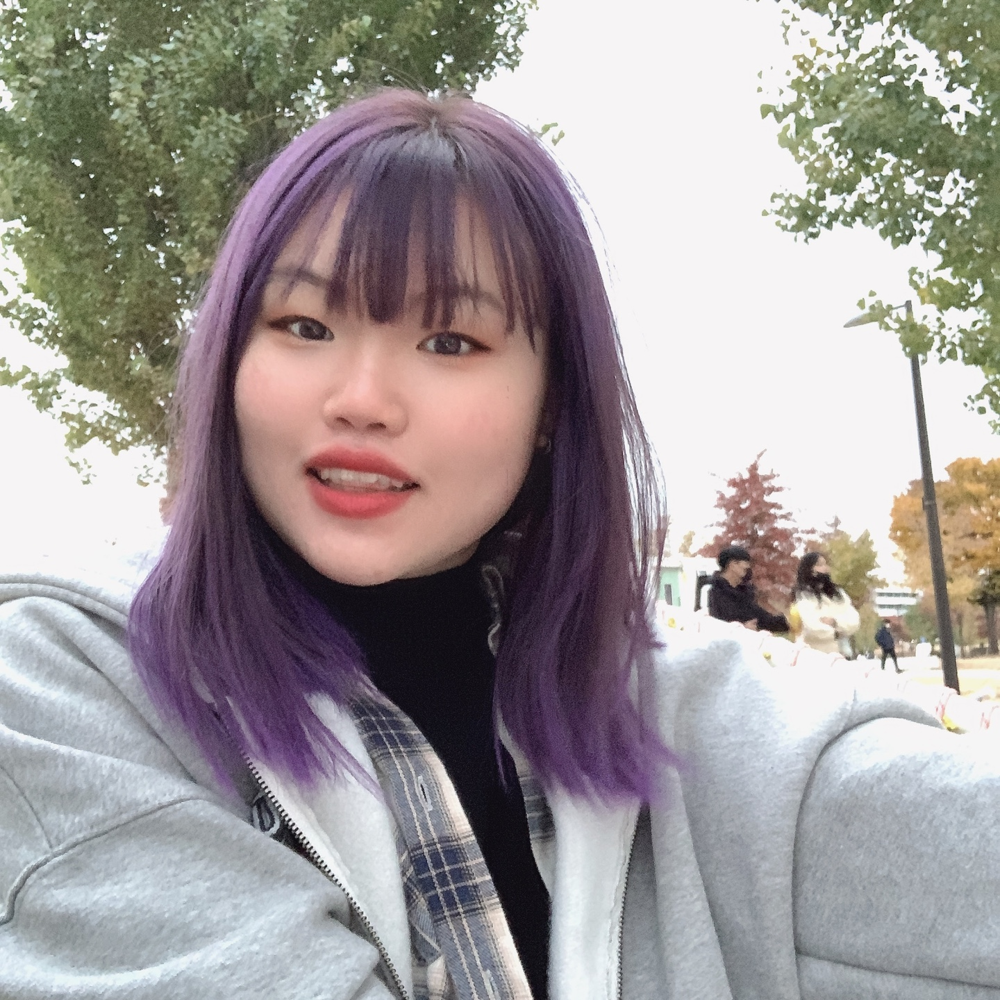
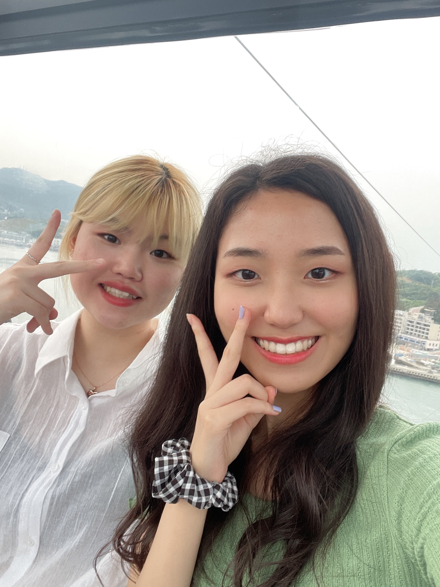
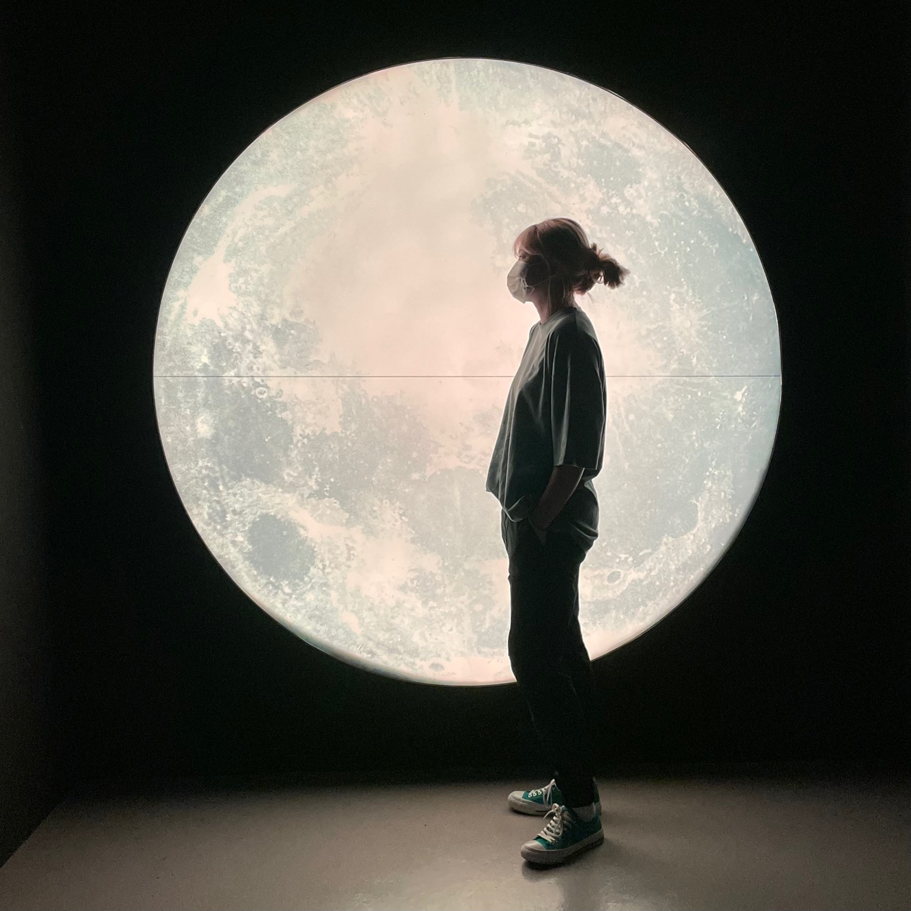
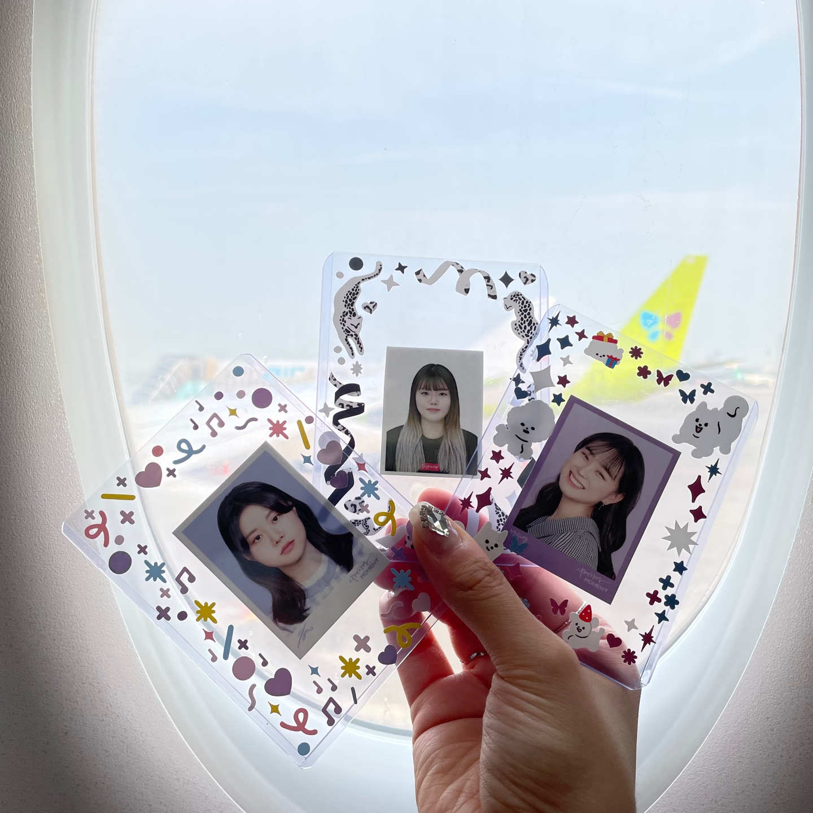
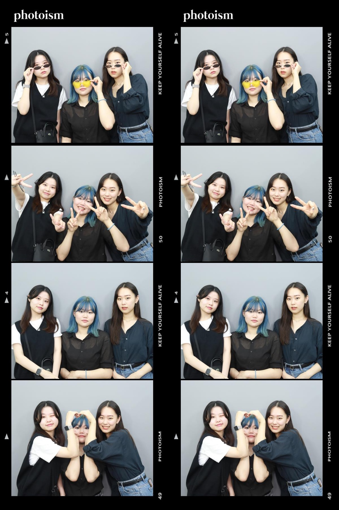

2019년. 대학교 1학년에서 다시 대학교 1학년이 되기까지. 20살의 나

대학입시 결과, 국민대학교 행정학과에 진학하게 된 나는 사실 그리 기쁘지 않았다. 나는 이학교에 올만한 사람이 아니라고 생각했으니까(ㅋㅋㅋㅋㅋㅋㅋㅋㅋ아 지금 생각하니까 자만심 쩐다) 쨋든 그래도 오게 된 학교이고 고1 때의 실수를 반복하고 싶지 않아서 학업에는 최선을 다하려고 노력했다(물론 기말에 주춤했지만). 그래서 1학기엔 과탑을 먹기도 했다지(훗) 그렇지만, 행정학과에서 배우는 내용이 재밌다고 느낀 적은 없었다. 애초에 나는 경찰이 목표였고 행정학과에서는 경찰행정이라는 좀더 협소한 범위를 배우는 학과가 아니었으니까. 뭐만 하면 설문조사하고 논문 쓰고, 설문지 만들고. 이런 과정에 딱히 흥미가 없었다. 학교도 맘에 안드는데 학과도 맘에 안든다? = 반수 이게 내 결론이었다. 다만 수능을 도전할 용기는 없어서 수시 반수를 다시 준비하게 된다. 이번에는 무조건 경찰행정학과로.(사실 그냥 대학 높이기 위해 다른데도 쓸까 고민했지만 결론적으론 경행과만 썼다)
정말, 정말, 정말 힘들었다. 대학교 1학년 여름방학 때부터 알바를 시작하게 되었는데 2학기가 되면서 알바, 반수 실패했을 때를 대비한 학점 챙기기, 자소서, 면접 준비, 그 와중에 맛본 동국씨의 탈락. 정신적/육체적으로 최악의 상태였다. 결론적으론 경기대 경찰행정학과에 최종합격했는데, 이때도 이 결과를 보고 펑펑 울었다. 마냥 기뻐서 난 눈물이라기 보다는 정말 이제 어떻게 이걸 부모님께 말하고, 정리하지 라는 생각들과 과거의 힘듦이 한번에 쏠려나온 것 같았다. 이때 진짜 많이 울었다. 그냥 울보였음 ㅎㅎ 이때 내가 주변사람들에게 닥치는 대로 조언을 구했는데, 이 조언들에 내가 정말 많은 힘을 받았다. 내가 컴퓨터에도 따로 메모해서 저장해놓은 조언이 예리쌤이 해주신 말씀인데 특별히 공개하겠다ㅋㅋ. "사람이 뭔가 선택을 할 때 온전히 만족스러운 선택이라는 건 없는 거고 그렇다면 최선의 선택을 해야하는건데 다른 건 다 포기해도 포기할 수 없는 무언갈 찾고 그걸 지키는 게 중요하다고 생각해. 그런 점에서 넌 이미 그 답을 알고 있는 거라고도 생각하고. 거리가 뭐 대수겠어. 가보고 싶은 길을 가보지 못한 후회보다 더 하겠냐" 정말 많은 위로가 되었고, 그 당시 나의 방향성을 잡아주신 말씀이다.
그래도 지금까지도 드문드문 연락하는 좋은 친구들과 함께한 1년이었다! 민주, 승주, 수빈, 선, 지은, 승연 등.. 이런저런 일을 겪고 나는 결국 내가 원하는 학과로 진학하기 위해 국민대를 자퇴함과 동시에 경기대에 대한 기대로 차기 시작할 쯔음 코로나가 출현하는데,,,
(20살 TMI - 술 먹고 길에서 토했다. 연희재 미안)
2020년. 코로나로 인해 딱 1번 학교에 가본 20학번. 21살의 나

비대면으로 학교를 딱 1번 간 썰을 풀기전에 2020년에는 드디어 친한친구들과 해외여행을 갔다~! 코로나가 늘어난 시점이어서 취소할까말까 고민이 많았지만 가기로 결정!! 파워 j인 내가 모든 계획을 시간별로 정리해서 떠난 대만 여행이었는데, 날씨가 이런저런 사유 등으로 조금씩 틀어지긴 했지만 그래도 재밌게 보내고 왔다! 그래도 가장 즐거웠던 시간은 우리끼리의 맥주타임ㅋㅋㅋ 그땐 진짜 배꼽 빠지게 웃다가 왔다.
아쉽게도 코로나 수가 급격히 증가하면서 학교수업이 전면 비대면으로 전환되었고, 이는 2021년까지 이어졌다. 나는 딱 1번 수업을 들으러 갔는데, 코로나가 잠깐 주춤했던 10월이다. 문제는 이후에 또 증가해서 저게 면접 때를 제외하곤 처음이자 마지막이었다는 것. 그리고 이 상황은 이글을 쓰는 2021 7월까지 이어진다. (결국 아는 친구가 한명도 없다ㅎ)
2021년에는 내가 타이알바를 주로 하고 있었는데 11월 우연히 대표님께 "나중에 저도 커피 자리나면 가르쳐주세요"라고 말한 것이 화근이 되어 나는 이후로 커피 고정이 되었다.. 또한, 코로나에 과장님 남편분께서 확진판정을 받으시면서 내가 오픈을 맡게된... 지금생각해도 고작 2주 배운내가 오픈한게 당황스럽다..; 그래서 나중에 대표님께 "저를 어떻게 믿고 오픈에 넣으셨어요?"라고 물어봤는데 "나는 너면 걱정없어"라고 말씀해주셔서 약간 부담스러우면서도 뭔가 내 스스로가 자랑(?)스러웠곸ㅋㅋㅋㅋ, 그만큼의 신뢰를 받고 있다는 것도 기뻤다! 다만, 문제였던 것은 주 7일근무라서 쉬는 날이 없었고, 기말고사와 겹치며 정말 힘든 연말을 2년 연속 보낸 것. 돈은 많이 벌었지만,, 너무 힘들었땨...ㅠㅠㅠ
(21살 TMI - 염색을 무려 6번. 단발로 CUT한 후 탈색 포함 8번 총 14번 했다.. 지금까지 두피에 잘 붙어있는 내 머리카락에 감사한다.)
2021년. 시련. 고뇌 그리고 변화. 현재를 살아가는 22살의 나

21살의 시작은 힘들었다. 1월부터 쉬지 않고 달렸던 탓일까. 4월까지 주 6일 근무를 하던 나는 결국 일에 벅찼고, 부담스러웠고, 그만큼의 일을 나에게 은연중에 맡긴 대표님과 이를 거절하지 못하는 나에게 매우 화가났다. 일 나가는 수를 줄였지만 그럼에도 해결되지 않는 이 힘듦은 결국 대표님과의 언쟁으로 이어졌고 정말 힘들고 고민하는 시간을 보냈다. 내가 어디서부터 잘못한건지? 왜 다들 나만큼 해주지 않는지? 내가 도대체 뭘 어떻게 해야하는지? 그렇게 6월을 보냈다. 그리고 생각한 것이 모든 여러 생각들을 뒤에 두고, '나 정말 지쳤구나. 나에게 완전한 휴식이 필요하구나'였다. 그래서 가장 먼저 한 것이 친구들과의 여행이었다. 연희재와 여수를, 중학교 친구들과 부산을 갔다왔다. 그리고 거기서 내 친구가 정말 멋있는 사람이라는 것과 생각외의 깨달음(?)을 얻고 왔다.
먼저 친구를 멋있다고 느꼈던 것 그 친구가 한 말 때문이다. "나는 내가 두개 중 어떤 선택을 하든, 책임질 자신이 있어" 정말 듣고 머리가 띵- 했다. 그리고 그런 확신이 멋있고 부러웠다. 나는 내가 지금까지 살면서 '나 확신이 있어'라는 말을 한 기억이 없다. 그건 아마 나 스스로 내가 무언가를 잘한다고 느끼면서도 그러한 나의 능력을 의심했다는 거겠지. 5월에 커피 술자리에서 20대 후반의 언니와 30대 오빠와 이야기를 할 때 이런 이야기를 해주셨다. "제가 저번에도 얘기했지만, 희경씨는 여기가 아닌 어디를 가도 잘할거에요." 듣고 울뻔했다. 나는 내 능력에 대한 확신이 있으면서도 없는데, 누군가 나를 그렇게 봐준다는게 감사했다. 그리고 한편으론 내가 좀더 나에 대해 확신을 가질 필요가 있다고 느꼈다. 내 인생을 살아줄 사람, 나밖에 없는데 나를 좀더 믿고 자신감있게 살아도 되지 않을까?
다음으로 깨달음은 부산여행에서 온 것인데, 중학교친구들은 모두 파워j인 친구들이다. 여행 5일 전쯤에 만나 시간별로 모든 계획을 세울 정도로 엄청난 j였다. 그러나 아쉽게도 우리가 부산에 갔을 때 비가 정말 많이 와서 모든 일정을 불가피하게 취소해야만 했고, 숙소에 머무르는 시간이 많을 수 밖에 없었다. 그런데, 즐거웠다. 밥 먹을 때를 제외하고는 나가지도 않았는데 좋았고, 카페에 3시간씩 있으며 이야기를 해도 지치지 않았고, 비가 안오는 타이밍에 맞게 바다도 봤고, 사진도 많이 찍고, 무엇보다 새벽까지 꽤 진지한 주제로 이야기를 했음에도 즐거웠다.
나는 여행에도 그렇듯이 인생에도 계획이 필수적이라고 생각했다. 장기적인 계획이 아니더라도 단기적인 계획은 필수적이라고 그렇게 생각했다. 그러나 모든 계획을 무산시키고 마음내키는대로 했던 그 이틀이 너무 재밌고, 행복했다. 많은 힐링과 위로를 받고왔다. 내 인생이 내 계획대로 탄탄하게 나아간다면, 물론 나름 성공했다는 인생을 살아갈수도 있겠지만 재미가 없을 것 같다는 생각이 문득 들었다. 물론, 이 계획적인 성격이 한순간에 바뀔 순 없겠지. 그렇지만 나는 앞으로 예상하지 못한 시도도, 도전도 해볼 생각이다. 안하고 후회하느니 뭐라도 하고 배우는게 나으니까
2021년 7월 28일. 사이트를 만들며 초등학교 시절을 떠올리다가 문득 초등학교 친구들이 어떻게 사나 궁금해서 인스타그램을 추적했다. 그리고 몇몇 친구들의 활동들을 보면서 문득 이런 생각이 들었다. "나, 열심히 살아야 겠다. 어느 날 우연하게도 마주친 친구들 앞에서 내가 나는 왜 이렇게밖에 살지 못했지라고 후회하고 싶지 않다." 작심삼일도 가지 못한 나의 흐지부지한 의지가 처음으로 조금 확고하게 섰다. 나, 열심히 살아야겠다. 뭘 하더라도 열심히 해야겠다.
2021년은 나한테 매우 큰 의미가 있는 해이다. 그 이유는 약 10년을 꿈꿔온 경찰이라는 꿈이 처음으로 사그라들었기 때문이다. 사실 나는 경찰을 너무 오랬동안 원해서 이 꿈이 아니면 안될 것만 같았다. 근데 이번년도에 처음으로 다른 모습의 나로 성공하는 것도 멋지지 않나? 생각하게 되었다. 그리고 공부하고 있는게 코딩인데 알면 알수록 어렵고 배워야할 게 너무나 많지만 재밌다. 편입을 정말 진심으로 생각하게 되서 편입 공부를 할지말지는 내가 코딩 공부를 하면서 진지하게 생각해볼일이지. 이에 대한 결정을 지금 딱 내리고 싶지는 않다. 지금은 불붙은 이 코딩에 대한 흥미를 지식으로 바꿀 때라고 생각한다. 앞으로 내가 어떤 길을 가든, 어떤 선택을 하든, 내 선택이고 내가 책임져야할 길이니까 뭘 하더라도 최선을 다할 것이다. 힘내자
(22살 TMI - 담배를 처음 펴봤다. 그치만 별 도움이 안 됐다.)